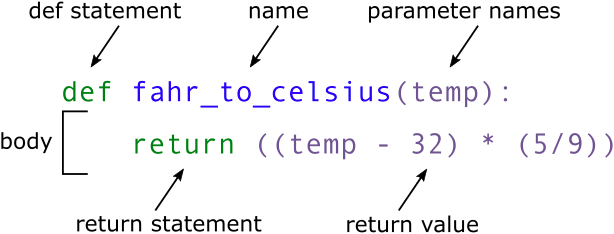
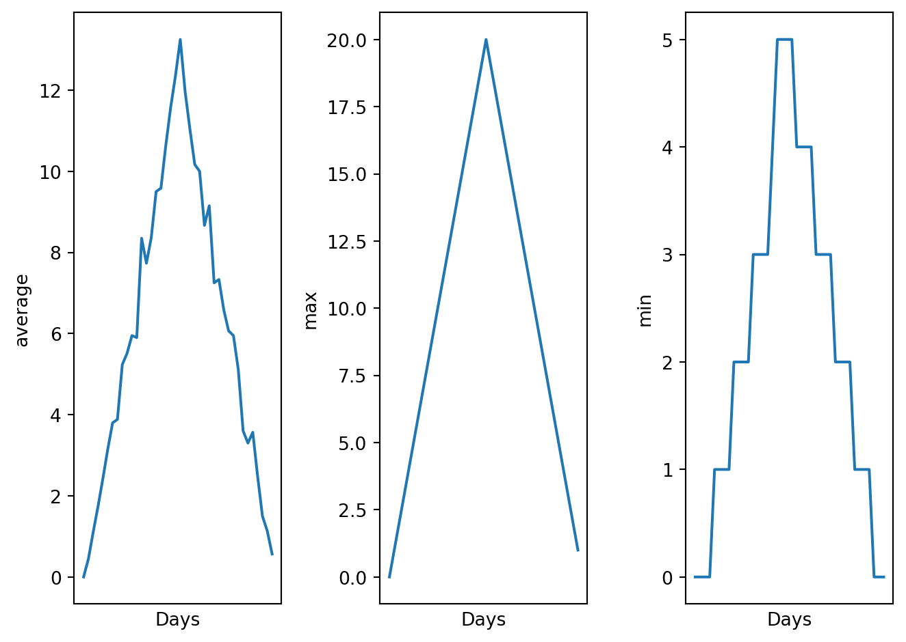

num = 37
if num > 100:
print('greater')
else:
print('not greater')
print('done')not greater
doneAt the end of this class, you will be able to:
In our last lesson, we discovered something suspicious was going on in our inflammation data by drawing some plots. How can we use Python to automatically recognize the different features we saw, and take a different action for each? In this lesson, we’ll learn how to write code that runs only when certain conditions are true.
Conditionals allows you to make decisions in your code based on certain conditions.
if something is true:
do task a
otherwise:
do task bFor example we can ask Python to take different actions, depending on a condition, with an if statement:
num = 37
if num > 100:
print('greater')
else:
print('not greater')
print('done')not greater
doneIf the test that follows the if statement is true, the body of the if (i.e., the set of lines indented underneath it) is executed, and “greater” is printed. If the test is false, the body of the else is executed instead, and “not greater” is printed. Only one or the other is ever executed before continuing on with program execution to print “done”.

Conditional statements don’t have to include an else. If there isn’t one, Python simply does nothing if the test is false:
num = 53
print('before conditional...')
if num > 100:
print(num, 'is greater than 100')
print('...after conditional')before conditional...
...after conditionalHere we used a comparison operator (>) to compare the value of num to 100. Here are other comparison operators:
| Operator | Name |
|---|---|
== |
Equal |
!= |
Not equal |
> |
Greater than |
>= |
Greater than or equal to |
< |
Less than |
<= |
Less than or equal to |
# Example
2 == 1 + 1TrueNote that to test for equality we use a double equals sign == rather than a single equals sign = which is used to assign values.
You should never use equalty operators (==or !=) with floats or complex values.
# Example
2.1 + 3.2 == 5.3FalseThis is a floating point arithmetic problem seen in other programming languages. It is due to the difficulty of having a fixed number of binary digits (bits) to accurately represent some decimal number. This leads to small rounding errors in calculations.
2.1 + 3.2 5.300000000000001If you need to use equalty operators, do it with a degree of freedom:
tol = 1e-6 ; abs((2.1 + 3.2) - 5.3) < tolTrueThe result of a comparison operator is a boolean value (True or False), which can be used in an if statement to control the flow of the program.
Booleans represent one of two values: True or False. When you compare two values, the expression is evaluated and Python returns the Boolean answer:
num = 37
print(num > 100)FalseThere are also membership operators (in and not in). They are used to test if a value is present in a sequence (like a list or a string):
| Operator | Description |
|---|---|
in |
Returns True if a sequence with the specified value is present in the object |
not in |
Returns True if a sequence with the specified value is not present in the object |
seq = ['ATGAAGGGTCCAAAA', 'AGTCCCCGTATGAT', 'ACCT', 'ACCT']
print('ACCT' in seq)
print('G' in seq[-1])True
Falseelif statementsWe can also chain several tests together using elif which is short for “else if”. The elif keyword is Python’s way of saying “if the previous conditions were not true, then try this condition”. The following Python code uses elif to print the sign of a number.
num = -3
if num > 0:
print(num, 'is positive')
elif num == 0:
print(num, 'is zero')
else:
print(num, 'is negative')-3 is negativeWe can also combine tests using logical operators and, or and not to create more complex conditions.
Logical operators are used to combine conditional statements:
| Operator | Description |
|---|---|
and |
Returns True if both statements are true |
or |
Returns True if one of the statements is true |
not |
Reverse the result, returns False if the result is true |
Result of the and operator:
| Boolean 1 | Boolean 2 | Result |
|---|---|---|
True |
True |
True |
True |
False |
False |
False |
True |
False |
False |
False |
False |
# Example
False and False, False and True, True and False, True and True(False, False, False, True)Result of the or operator:
| Boolean 1 | Boolean 2 | Result |
|---|---|---|
True |
True |
True |
True |
False |
True |
False |
True |
True |
False |
False |
False |
# Example
False or False, False or True, True or False, True or True(False, True, True, True)# Example
True or not TrueTrueif (1 > 0) and (-1 >= 0):
print('both parts are true')
else:
print('at least one part is false')at least one part is falseif (1 < 0) or (1 >= 0):
print('at least one test is true')at least one test is trueWith gene1_expression and gene2_expression given, are these 2 codes equivalent?
# Code A
if gene1_expression > gene2_expression:
print("Gene 1 has higher expression level.")
elif gene1_expression < gene2_expression:
print("Gene 2 has higher expression level.")
else:
print("Gene 1 and Gene 2 have the same expression level.")# Code B
if gene1_expression > gene2_expression:
print("Gene 1 has higher expression level.")
else:
if gene1_expression < gene2_expression:
print("Gene 2 has higher expression level.")
else:
print("Gene 1 and Gene 2 have the same expression level.")Are these two codes equivalent?
# Code A
if "ATG" in dna_sequence:
print("Start codon found.")
elif "TAG" in dna_sequence:
print("Stop codon found.")
else:
print("No interesting codon found.") # Code B
if "ATG" in dna_sequence:
print("Start codon found.")
if "TAG" in dna_sequence:
print("Stop codon found.")
else:
print("No interesting codon found.") This code is incorrect, can you tell why?
x = 7
if x > 5:
print("x is greater than 5")
if x > 10:
print("x is greater than 10")
elif x = 10:
print("x equals 10")
else:
print("x is less than 10") Now that we’ve seen how conditionals work, we can use them to check for the suspicious features we saw in our inflammation data.
From the first couple of plots, we saw that maximum daily inflammation exhibits a strange behavior and raises one unit a day. Wouldn’t it be a good idea to detect such behavior and report it as suspicious? Let’s do that! However, instead of checking every single day of the study, let’s merely check if maximum inflammation in the beginning (day 0) and in the middle (day 20) of the study are equal to the corresponding day numbers.
import pandas as pd
data = pd.read_csv('data/inflammation-01.csv', index_col=0)
max_inflammation_0 = data.max(axis=0).iloc[0]
max_inflammation_20 = data.max(axis=0).iloc[20]
if max_inflammation_0 == 0 and max_inflammation_20 == 20:
print('Suspicious looking maxima!')Suspicious looking maxima!We also saw a different problem in the third dataset; the minima per day were all zero (looks like a healthy person snuck into our study). And if neither of these conditions are true, we can use else to give the all-clear:
data = pd.read_csv('data/inflammation-01.csv', index_col=0)
max_inflammation_0 = data.max(axis=0).iloc[0]
max_inflammation_20 = data.max(axis=0).iloc[20]
if max_inflammation_0 == 0 and max_inflammation_20 == 20:
print('Suspicious looking maxima!')
elif data.min(axis=0).sum() == 0:
print('Minima add up to zero!')
else:
print('Seems OK!')Suspicious looking maxima!With another dataset:
data = pd.read_csv('data/inflammation-03.csv', index_col=0)
max_inflammation_0 = data.max(axis=0).iloc[0]
max_inflammation_20 = data.max(axis=0).iloc[20]
if max_inflammation_0 == 0 and max_inflammation_20 == 20:
print('Suspicious looking maxima!')
elif data.min(axis=0).sum() == 0:
print('Minima add up to zero!')
else:
print('Seems OK!')Minima add up to zero!In this way, we have asked Python to do something different depending on the condition of our data. Here we printed messages in all cases, but we could also imagine not using the else catch-all so that messages are only printed when something is wrong, freeing us from having to manually examine every plot for features we’ve seen before.
Instead of just printing if a file falls into one or the other category, we want to save in lists the name of the files that have suspicious maximum trend, a suspicious minimum trend and the ones that seem normal at the moment.
Modify the following code:
data = pd.read_csv('data/inflammation-03.csv', index_col=0)
max_inflammation_0 = data.max(axis=0).iloc[0]
max_inflammation_20 = data.max(axis=0).iloc[20]
if max_inflammation_0 == 0 and max_inflammation_20 == 20:
print('Suspicious looking maxima!')
elif data.min(axis=0).sum() == 0:
print('Minima add up to zero!')
else:
print('Seems OK!')Minima add up to zero!You will need to loop through all the files in the data folder, and create three lists maxima_suspicious_files, minima_suspicious_files and normal_files to save the names of the files that fall into each category.
Remember to make use of the function list.append(element) to add an element to a list.
In the last exercise, we created three lists to store the names of the files that have suspicious maximum trend, a suspicious minimum trend and the ones that seem normal at the moment. We could also have stored this information in a dictionary, which is a data structure that allows us to store key: value pairs.
A dictionary is a collection which is ordered (as of Python >= 3.7), changeable and does not allow duplicates keys. Dictionaries are written with curly brackets {}, with keys and values. Keys must be unique and of an immutable type (like strings or numbers), while values can be of any type (like strings, numbers, lists, dictionnaries…) and can be duplicated.
organism1_genes = {
#key: value;
'BRCA1': 'DNA repair',
'TP53': 'Tumor suppressor',
'EGFR': 'Cell growth',
'MYC': 'Regulation of gene expression'
}Dictionary items can be referred to by using the key name.
organism1_genes["BRCA1"]'DNA repair'Dictionaries have specific methods. Here are a few:
| Method | Description |
|---|---|
.items() |
Returns a list containing a tuple for each key value pair |
.keys() |
Returns a list containing the dictionary’s keys |
.values() |
Returns a list of all the values in the dictionary |
.pop() |
Removes the element with the specified key |
.get() |
Returns the value of the specified key |
Modify the previous code so that instead of having 3 lists maxima_suspicious_files, minima_suspicious_files and normal_files you have only one dictionnary, called classify_files. The values of the dictionary should be a list containing the name of the files, and the keys should be one of the following strings: "suspicious maxima", "suspicious minima" or "normal". How many files falls into each category?
You can initialize the dictionnary like so:
categorize_files = {
"suspicious maxima": [],
"suspicious minima": [],
"normal": []
}You can loop through the keys of a dictionary using the method .keys(), through the values using the method .values(), and through both keys and values using the method .items().
Here is an example:
organism1_genes = {
#key: value;
'BRCA1': 'DNA repair',
'TP53': 'Tumor suppressor',
'EGFR': 'Cell growth',
'MYC': 'Regulation of gene expression'
}
for gene, function in organism1_genes.items():
print(gene, "is involved in", function)BRCA1 is involved in DNA repair
TP53 is involved in Tumor suppressor
EGFR is involved in Cell growth
MYC is involved in Regulation of gene expressionLoop through the categorize_files dictionary created in the previous exercise, and print for each file, the category in which it falls into.
The output printed could look like:
data/inflammation-01.csv falls under the suspicious maxima category
data/inflammation-02.csv falls under the suspicious maxima category
data/inflammation-04.csv falls under the suspicious maxima category
data/inflammation-05.csv falls under the suspicious maxima category
data/inflammation-06.csv falls under the suspicious maxima category
data/inflammation-07.csv falls under the suspicious maxima category
data/inflammation-09.csv falls under the suspicious maxima category
data/inflammation-10.csv falls under the suspicious maxima category
data/inflammation-12.csv falls under the suspicious maxima category
data/inflammation-03.csv falls under the suspicious minima category
data/inflammation-08.csv falls under the suspicious minima category
data/inflammation-11.csv falls under the suspicious minima categoryLoop through the filenames list created by filenames = sorted(glob.glob('data/inflammation*.csv')) instead of the categorize_files dictionary. Print for each file, the category in which it falls into. You will need to use an if statement and the membership operator in to check if a file is in one of the two categories. The output printed could look like:
data/inflammation-01.csv falls under the suspicious maxima category
data/inflammation-02.csv falls under the suspicious maxima category
data/inflammation-03.csv falls under the suspicious minima category
data/inflammation-04.csv falls under the suspicious maxima category
data/inflammation-05.csv falls under the suspicious maxima category
data/inflammation-06.csv falls under the suspicious maxima category
data/inflammation-07.csv falls under the suspicious maxima category
data/inflammation-08.csv falls under the suspicious minima category
data/inflammation-09.csv falls under the suspicious maxima category
data/inflammation-10.csv falls under the suspicious maxima category
data/inflammation-11.csv falls under the suspicious minima category
data/inflammation-12.csv falls under the suspicious maxima categoryFrom the dictionary organism1_genes created as example, get the value of the key BRCA1. If the key does not exist, return Unknown by default. Try your code before and after removing the BRCA1 key:value pair.
Check the help of get by running help(dict.get).
Let’s learn about another data structure: the set. It will be useful to check for common elements between two lists, for example, the list of files categorized as “suspicious maxima” and the list of files categorized as “suspicious minima”.
Set is a collection which is unordered and unindexed. It does not allow duplicate members (they will be ignored). Sets are written with curly brackets {}.
seq = {'BRCA1', 'TP53', 'EGFR', 'MYC'}Once a set is created, you cannot change its items directly (as they don’t have index), but you modify the set by removing and adding items.
Sets have specific methods. Here are a few:
| Method | Description |
|---|---|
.add() |
Adds an element to the set |
.difference() |
Returns a set containing the difference between two sets |
.intersection() |
Returns a set containing the intersection between two sets |
.union() |
Returns a set containing the union of two sets |
.remove() |
Remove the specified item |
.pop() |
Removes a random element |
Using the two following sets, create sets that represent:
Remove from both sets the genes that are presents in boths sets. You can loop through a list of common genes, and use the method .remove() on both sets to do that.
organism1_genes = {'BRCA1', 'TP53', 'EGFR', 'MYC'}
organism2_genes = {'TP53', 'MYC', 'KRAS', 'BRAF'}You can get the data type of any object by using the function type(). You can (more or less easily) convert between data types.
| Function | Description |
|---|---|
bool() |
Convert to boolean type |
int(), float() |
Convert between integer or float types |
str() |
Convert to string type |
list(), set() |
Convert between list, and set types |
bool(1)Trueint(5.8) 5str(1)'1'list({1, 2, 3})[1, 2, 3]set([1, 2, 3, 3]){1, 2, 3}Verify that no file has a suspicious maximum trend and a suspicious minimum trend at the same time. You will need to modify the following code, to allow a file to be categorized as “suspicious minima” even if it is already categorized as “suspicious maxima”, and vice versa. Don’t bother with the “normal” category, you can remove it as there was no files falling into this category.
You can keep using dictionnaries, and then transform the values into sets to check for common files between the two categories.
import glob
import pandas as pd
import matplotlib.pyplot as plt
filenames = sorted(glob.glob('data/inflammation*.csv'))
categorize_files = {
"suspicious maxima": [],
"suspicious minima": [],
"normal": []
}
for filename in filenames:
data = pd.read_csv(filename, index_col=0)
max_inflammation_0 = data.max(axis=0).iloc[0]
max_inflammation_20 = data.max(axis=0).iloc[20]
if max_inflammation_0 == 0 and max_inflammation_20 == 20:
categorize_files["suspicious maxima"].append(filename)
elif data.min(axis=0).sum() == 0:
categorize_files["suspicious minima"].append(filename)
else:
categorize_files["normal"].append(filename)
print("maxima_suspicious_files", categorize_files["suspicious maxima"])
print("minima_suspicious_files", categorize_files["suspicious minima"])
print("normal_files", categorize_files["normal"])maxima_suspicious_files ['data/inflammation-01.csv', 'data/inflammation-02.csv', 'data/inflammation-04.csv', 'data/inflammation-05.csv', 'data/inflammation-06.csv', 'data/inflammation-07.csv', 'data/inflammation-09.csv', 'data/inflammation-10.csv', 'data/inflammation-12.csv']
minima_suspicious_files ['data/inflammation-03.csv', 'data/inflammation-08.csv', 'data/inflammation-11.csv']
normal_files []We have created a workflow to check if our data looks suspicious. In python we can wrap this workflow into a function, which is a reusable block of code that performs a specific task. Functions allow us to organize our code and make it more modular and easier to read.
For example, instead of reading a whole block of code, we could create a function called detect_problems() that takes a filename as input and returns whether the data in the file is suspicious or not. But first let’s learn how to create a function in Python.
A function usually takes some data as input (parameters that are required or optional), and usually returns an output (that can be of any type).
We already learned how to run a predefined function in the last lesson. You need to write its name followed by parenthesis. Parameters are added inside the parenthesis as follow:
# round(number, ndigits=None)
x = round(number = 5.76543, ndigits = 2)
print(x)5.77To get more information about a function, use the help() function.
We will now learn how to create our own function.
Imagine that we want to convert a temperature in Fahrenheit and converting it to Celsius. We could write:
fahrenheit_val = 99
celsius_val = ((fahrenheit_val - 32) * (5/9))and for a second number we could just copy the line and rename the variables:
fahrenheit_val = 99
celsius_val = ((fahrenheit_val - 32) * (5/9))
fahrenheit_val2 = 43
celsius_val2 = ((fahrenheit_val2 - 32) * (5/9))But we would be in trouble as soon as we had to do this more than a couple times. Cutting and pasting it is going to make our code get very long and very repetitive, very quickly. We’d like a way to package our code so that it is easier to reuse, a shorthand way of re-executing longer pieces of code. This is what functions are for.
In python, a function is declared with the keyword def followed by its name, and the arguments inside parenthesis. The next block of code, corresponding to the content of the function, must be indented. The output is defined by the return keyword.
def explicit_fahr_to_celsius(temp):
# Assign the converted value to a variable
converted = ((temp - 32) * (5/9))
# Return the value of the new variable
return converted
def fahr_to_celsius(temp):
# Return converted value more efficiently using the return
# function without creating a new variable. This code does
# the same thing as the previous function but it is more explicit
# in explaining how the return command works.
return ((temp - 32) * (5/9))
When we call the function, the values we pass to it are assigned to those variables so that we can use them inside the function. Inside the function, we use a return statement to send a result back. Let’s try running our function:
converted_temp = fahr_to_celsius(32)
print(converted_temp)
# or even,
print('freezing point of water:', fahr_to_celsius(32), 'C')
print('boiling point of water:', fahr_to_celsius(212), 'C')0.0
freezing point of water: 0.0 C
boiling point of water: 100.0 CWe’ve successfully called the function that we defined, and we have access to the value that we returned.
You can also add a description of the function directly after the function definition. It is the message that will be shown when running help(). As it can be along text over multiple lines, it is common to put it inside triple quotes """.
def fahr_to_celsius(temp):
"""Returns the temperature in Celsius given a temperature in Fahrenheit.
Parameters:
temp (float): Temperature in Fahrenheit.
"""
return ((temp - 32) * (5/9))
help(fahr_to_celsius)Help on function fahr_to_celsius in module __main__:
fahr_to_celsius(temp)
Returns the temperature in Celsius given a temperature in Fahrenheit.
Parameters:
temp (float): Temperature in Fahrenheit.
You can have several arguments. They can be mandatory or optional. To make them optional, they need to have a default value assigned inside the function definition, like so:
def fahr_to_celsius(temp, inverted = False):
"""Returns the temperature in Celsius given a temperature in Fahrenheit,
or the inverse (Celsius to Fahrenheit) if inversted is True.
Parameters:
temp (float): Temperature in Fahrenheit.
inverted (bool, optional): Whether to convert from Celsius to Fahrenheit (True) or Fahrenheit to Celsius (False).
"""
if inverted:
new_temp = ((temp * (9/5)) + 32)
else:
new_temp = ((temp - 32) * (5/9))
return new_temp
# Or more efficiently:
def fahr_to_celsius(temp, inverted = False):
"""Returns the temperature in Celsius given a temperature in Fahrenheit,
or the inverse (Celsius to Fahrenheit) if inversted is True.
Parameters:
temp (float): Temperature in Fahrenheit.
inverted (bool, optional): Whether to convert from Celsius to Fahrenheit (True) or Fahrenheit to Celsius (False).
"""
if inverted:
return ((temp * (9/5)) + 32)
else:
return ((temp - 32) * (5/9))
help(fahr_to_celsius)Help on function fahr_to_celsius in module __main__:
fahr_to_celsius(temp, inverted=False)
Returns the temperature in Celsius given a temperature in Fahrenheit,
or the inverse (Celsius to Fahrenheit) if inversted is True.
Parameters:
temp (float): Temperature in Fahrenheit.
inverted (bool, optional): Whether to convert from Celsius to Fahrenheit (True) or Fahrenheit to Celsius (False).
The return keyword is present twice, but the function will stop as soon as it reaches the first return statement, so if inverted is True, the second return statement will never be reached.
The input temp is mandatory but inverted is optional as it has a default value of False. If we call the function without providing a value for inverted, it will be set to False by default.
fahr_to_celsius(32)0.0fahr_to_celsius(inverted = True)--------------------------------------------------------------------------- TypeError Traceback (most recent call last) Cell In[59], line 1 ----> 1 fahr_to_celsius(inverted = True) TypeError: fahr_to_celsius() missing 1 required positional argument: 'temp'
Reminder: if you provide the parameters in the exact same order as they are defined, you don’t have to name them. If you name the parameters you can switch their order. As good practice, put all required parameters first.
fahr_to_celsius(inverted = True, temp = 100)212.0fahr_to_celsius(100, True)212.0If no return statement is given, then no output will be returned, but the function will be run.
def fahr_to_celsius(temp, inverted = False):
"""Returns the temperature in Celsius given a temperature in Fahrenheit,
or the inverse (Celsius to Fahrenheit) if inversted is True.
Parameters:
temp (float): Temperature in Fahrenheit.
inverted (bool, optional): Whether to convert from Celsius to Fahrenheit (True) or Fahrenheit to Celsius (False).
"""
print("We are inside the function, the value of temp is:", temp)
if inverted:
new_temp = ((temp * (9/5)) + 32)
else:
new_temp = ((temp - 32) * (5/9))print(fahr_to_celsius(32))We are inside the function, the value of temp is: 32
NoneThe output can be of any type. If you have a lot of things to return, you might want to return a list.
def multiple_of_3(list_of_numbers):
"""Returns the number that are multiple of 3."""
multiples = []
for num in list_of_numbers:
if num % 3 == 0:
# num % 3 == 0 means that the remainder
# of num divided by 3 is 0,
# which means that num is a multiple of 3
multiples.append(num)
return multiples
multiple_of_3(range(1, 20, 2))[3, 9, 15]This could be written as a one-liner.
def multiple_of_3(list_of_numbers):
"""Returns the number that are multiple of 3."""
multiples = [num for num in list_of_numbers if num % 3 == 0]
return multiples
multiple_of_3(range(1, 20, 2))[3, 9, 15]In composing our temperature conversion function, we sometimes created a variable inside of the function, new_temp. We refer to such variables as local variables because they no longer exist once the function is done executing. If we try to access their values outside of the function, we will encounter an error:
print(new_temp)--------------------------------------------------------------------------- NameError Traceback (most recent call last) Cell In[66], line 1 ----> 1 print(new_temp) NameError: name 'new_temp' is not defined
If you want to reuse the converted temperature having calculated it with fahr_to_celsius, you can store the result of the function call in a variable:
converted_temp = fahr_to_celsius(32)
print("Converted temp is:", converted_temp)We are inside the function, the value of temp is: 32
Converted temp is: NoneThe variable converted_temp, being defined outside any function, is said to be global.
Interestingly, inside a function, one can read the value of such global variables:
def fahr_to_celsius(temp, inverted = False):
if inverted:
return ((temp * (9/5)) + 32)
else:
return ((temp - 32) * (5/9))
def print_temperatures():
print('temperature in Fahrenheit was:', temp_fahr)
print('temperature in Celsius was:', temp_celsius)
temp_fahr = 212.0
temp_celsius = fahr_to_celsius(212.0)
print_temperatures()temperature in Fahrenheit was: 212.0
temperature in Celsius was: 100.0It is not recommended to modify the value of a global variable inside a function, as it can lead to unexpected behavior and make the code harder to debug. If you need to modify a global variable, it is better to return the modified value from the function and assign it to the global variable outside of the function.
Now that we know how to wrap bits of code up in functions, we can make our inflammation analysis easier to read and easier to reuse. First, let’s make a visualize() function that generates our plots:
import matplotlib.pyplot as plt
import pandas as pd
import numpy as np
def visualize(filename):
"""Visualizes the average, maximum and minimum inflammation per day for a given file.
Parameters:
filename (str): The path of the file to visualize.
"""
data = pd.read_csv(filename, index_col=0)
fig = plt.figure()
axes1 = fig.add_subplot(1, 3, 1)
axes2 = fig.add_subplot(1, 3, 2)
axes3 = fig.add_subplot(1, 3, 3)
axes1.set_ylabel('average')
axes1.set_xlabel('Days')
axes1.set_xticks([])
axes1.plot(data.mean(axis=0))
axes2.set_ylabel('max')
axes2.set_xlabel('Days')
axes2.set_xticks([])
axes2.plot(data.max(axis=0))
axes3.set_ylabel('min')
axes3.plot(data.min(axis=0))
axes3.set_xlabel('Days')
axes3.set_xticks([])
fig.tight_layout()
plt.show()
visualize("data/inflammation-01.csv")
We did not use the return keyword. In Python, functions are not required to include a return statement and can be used for the sole purpose of grouping together pieces of code that conceptually do one thing. In such cases, function names usually describe what they do, e.g. visualize(). This is a common practice in Python, and it is not considered bad style. In fact, it can make the code more readable and easier to understand.
By giving our function human-readable names, we can more easily read and understand what is happening in the for loop. Even better, if at some later date we want to use either of those pieces of code again, we can do so in a single line.
Moreover, when writing code, it is important to keep in mind that other people (or even yourself in the future) will have to read and understand it. Therefore, it is good practice to write code that is easy to read and understand. This can be achieved by using descriptive variable and function names, adding comments to explain what the code is doing, and organizing the code in a logical way. Both documentation and a programmer’s coding style combine to determine how easy it is for others to read and understand the programmer’s code.
Create a function that prints a message if the data in a file looks suspicious, using the same criteria as before (suspicious looking maxima and minima that add up to zero). No output needs to be returned, just print the message. It needs to also print the name of the file that is being checked.
For example the output of detect_problems("data/inflammation-01.csv") could be:
Checking file: data/inflammation-01.csv
Suspicious looking maxima!Use it on one of the inflammation files, and then on all of them using a loop.
Sooner or later we might want to use our program in a pipeline or run it in a shell script to process thousands of data files. In order to do that in an efficient way, we need to make our programs work like other Unix command-line tools. For example, we may want a program that reads a dataset and prints the average inflammation per patient.
If you remember from the first lesson, it can be used either interactively in the terminal, or by writing a shell script (a file that contains shell commands) and running it.
In this lesson we are switching from typing commands in a Python interpreter to typing commands in a shell terminal window (such as bash). When you see a $ in front of a command that tells you that you are in the shell, when you see a >>> it tells you are in the Python interpreter.
For this we need to create a Python script, which is a file that contains Python code. We can create a Python script using any text editor. The file should have a .py extension to indicate that it is a Python script.
Open a new file in your text editor, and write the following code:
#!/usr/bin/env python3
import pandas as pd
def main(filename, min = True, mean = True, max = True):
data = pd.read_csv(filename, index_col=0)
stats = {}
if min:
stats['min'] = data.min(axis=0).min()
if mean:
stats['mean'] = data.mean(axis=0).mean()
if max:
stats['max'] = data.max(axis=0).max()
for key, value in stats.items():
print(f"{key}: {value}")Save it under the name inflammation_stats.py, in ~/Desktop/swc-python/code.
F-strings are a way to format strings in Python. They are defined by prefixing a string with the letter f or F, and they allow you to include expressions inside curly braces {} that will be evaluated at runtime and included in the string. They were introduced in Python 3.6 and provide a more concise and readable way to format strings. See the official documentation for more information on hwo to format strings.
You should already be in the ~/Desktop/swc-python/ directory. If not you can navigate to it using the cd command in the terminal. Then, you can run the script using the following command:
cd ~/Desktop/swc-pythonYou can verify you are in the right directory by running pwd (print working directory):
pwdYou can now run the python script:
./code/inflammation_stats.py
# or
python code/inflammation_stats.py It should not output anything, as we only provided a function but did not call it. We need to call the main() function and provide it with the name of the file we want to analyze. We can do that by adding the following lines at the end of our script:
main("data/inflammation-01.csv")Now, running ./code/inflammation_stats.py in command line should output the average, minimum and maximum inflammation per patient for the file data/inflammation-01.csv.
There are some interesting ways to get input from the user:
input() receives input from the keyboard. This means that the input is defined while the python script is being executed.sys.argv takes arguments provided in command line after the name of the program. This means that the input is defined before the python script is being executed.argparse is similar to sys.argv, with the advantage of being able to give specific names to arguments.The sys.argv list contains the command-line arguments passed to the script, and sys.argv[1] refers to the first argument (the filename in this case).
Python stops executing when it comes to the input() function, and continues when the user has given some input.
In the inflammation_stats.py file , write the following after the end of the main() function:
filename = input("Enter filename: ")
print("Filename is: " + filename)
main(filename)Then in the terminal, run:
./code/inflammation_stats.py
# or
python code/inflammation_stats.py You should be asked, in command line, to enter a filename. When you write it (e.g. data/inflammation-01.csv), and press Enter, it should run the main() function with the given file.
Enter filename: data/inflammation-01.csv
Filename is: data/inflammation-01.csv
min: 0
mean: 6.14875
max: 20To use sys.argv you need to import a module called sys. It is part of the standard python library, so you should not have to install anything in particular.
Modify the same python script, to add at the beginning of the script:
import sys and substitute the end of the script with:
print("Filename is: " + sys.argv[1])
main(sys.argv[1])Then in the terminal, run:
./code/inflammation_stats.py data/inflammation-01.csv
# or
python code/inflammation_stats.py data/inflammation-01.csvArguments are given in command line, separated by [space].
Filename is: data/inflammation-01.csv
min: 0
mean: 6.14875
max: 20What is the type of sys.argv? Remember that in python index begins at 0. What do you think is sys.argv[0]? Verify!
Also, what happens if you run ./code/inflammation_stats.py data/inflammation-01.csv data/inflammation-02.csv?
Just like for sys, you need to import argparse.
Modify the same python script, to add at the beginning of the script:
import argparse and substitute the end of the script with:
parser = argparse.ArgumentParser()
parser.add_argument('--filename', action="store", required=True)
args = parser.parse_args()
print("Filename is: " + args.filename)
main(args.filename)Then in the terminal, run:
./code/inflammation_stats.py --filename data/inflammation-01.csvArguments are given in command line, but they have specific names.
argparse is a very useful module when creating programs! You can easily specify the expected type of argument, whether it is optional or not, and create a help for your script. Check their tutorial for more information.
Modify the script to also take --min, --mean and --max as command line arguments. If the argument is given, the corresponding statistic will be calculated and printed. By default, it should not calculate any of the statistics, the user has to specify that in command line.
If the user runs ./code/inflammation_stats_argparse.py --filename data/inflammation-01.csv --min --max, it should only calculate and print the minimum and maximum inflammation per patient, but not the mean.
You can use the action="store_true" option in add_argument() to create a boolean variable for each statistic.
For example:
parser.add_argument('--min', action="store_true")This line will create a variable called args.min, that will be set to False by default. When the user provides the --min argument in command line, args.min will be set to True.
You should successfully run your script with the following commands:
./code/inflammation_stats.py --filename data/inflammation-01.csv --min
./code/inflammation_stats.py --filename data/inflammation-01.csv --max
./code/inflammation_stats.py --filename data/inflammation-01.csv --min --max
./code/inflammation_stats.py --filename data/inflammation-01.csv --min --max --meanThe next step is to teach our program how to handle multiple files.
We want our program to process each file separately, so we need a loop that executes once for each filename. If we specify the files on the command line, the filenames will be in args.filename. Fortunately, argparse has a built-in way to handle an unknown number of arguments. We can use the nargs='+' option in add_argument() to specify that we want to accept one or more filenames as input. This will create a list of filenames in args.filename, which we can then loop through.
Here’s how it can be done:
#!/usr/bin/env python3
import argparse
import pandas as pd
def main(filename, min = True, mean = True, max = True):
for file in filename:
print("Processing file:", file)
data = pd.read_csv(file, index_col=0)
stats = {}
if min:
stats['min'] = data.min(axis=0).min()
if mean:
stats['mean'] = data.mean(axis=0).mean()
if max:
stats['max'] = data.max(axis=0).max()
for key, value in stats.items():
print(f"{key}: {value}")
# Deal with arguments
parser = argparse.ArgumentParser()
parser.add_argument('--filename', nargs='+', action="store", required=True)
parser.add_argument('--min', action="store_true")
parser.add_argument('--max', action="store_true")
parser.add_argument('--mean', action="store_true")
args = parser.parse_args()
main(args.filename, min=args.min, mean=args.mean, max=args.max)Then in command line, you can run:
./code/inflammation_stats.py --filename data/inflammation-01.csv --min --max
./code/inflammation_stats.py --filename data/inflammation-01.csv data/inflammation-02.csv --min --max
./code/inflammation_stats.py --filename data/inflammation-0*.csv --min --maxWhat is the type of args.filename when using nargs='+'? What does it contain?
Documentation is very important as a user does not know what the expected input is, and what the output will be. It is also important to specify how the program should be run, and to give examples of usage. This is especially important when creating command-line programs, as users might not be familiar with how to use them.
When coding, a good practice is to test your code on small data files before running it on large datasets. This allows you to check that your code is working as expected and to catch any errors or bugs before they cause problems with larger datasets.
Indeed, your code might not have any syntax errors, but it might not be doing what you think it is doing. For example, you might think that your code is calculating the mean of a dataset, but in reality, it is calculating the sum. If you run your code on a large dataset, you might not notice this error until it is too late.
Here we can test our code on a smaller file that has the same structure as the larger files, but only contains a few lines of data. This way, we can easily check that our code is calculating the mean correctly for each line, and that it is doing what we expect it to do.
The file data/small-01.csv contains the following data:
Day1,Day2,Day3
Patient1,0,0,1
Patient2,0,1,2We can run:
./code/inflammation_stats.py --filename data/small-01.csv --min --max --meanThere are two more files small-02.csv and small-03.csv that you can use to test your code.
It is also important to test your code on edge cases, which are cases that are at the extreme ends of the input space. For example, if your code is supposed to handle missing values, you should test it on a file that contains missing values to make sure that it is handling them correctly.
Even if your documentation is very clear, the user might not behave as you expect them to, and might provide input that is not in the format you expected. For example, if your code is supposed to take a filename as input, the user might provide a filename that does not exist, or a filename that is in a different format than what you expected.
It is important to test your code on such edge cases to make sure that it is handling them correctly and providing useful error messages to the user. But how can we provide useful error messages to the user? This is what we will see in the next section.
Every programmer encounters errors, both those who are just beginning, and those who have been programming for years. Encountering errors and exceptions can be very frustrating at times, and can make coding feel like a hopeless endeavour. However, understanding what the different types of errors are and when you are likely to encounter them can help a lot. Once you know why you get certain types of errors, they become much easier to fix.
Errors in Python have a very specific form, called a traceback. Let’s examine one by providing a filename that does not exist:
./code/inflammation_stats.py --filename data/small-06.csv --min --max --meanProcessing file: data/small-06.csv
Traceback (most recent call last):
File "/Volumes/projects/PCa_SingleCell/utils/workshop/python-intro/./code/inflammation_stats.py", line 31, in <module>
main(args.filename, min=args.min, mean=args.mean, max=args.max)
File "/Volumes/projects/PCa_SingleCell/utils/workshop/python-intro/./code/inflammation_stats.py", line 9, in main
data = pd.read_csv(file, index_col=0)
^^^^^^^^^^^^^^^^^^^^^^^^^^^^^^
File "/Users/gilbartv/miniconda3/lib/python3.11/site-packages/pandas/io/parsers/readers.py", line 1026, in read_csv
return _read(filepath_or_buffer, kwds)
^^^^^^^^^^^^^^^^^^^^^^^^^^^^^^^
File "/Users/gilbartv/miniconda3/lib/python3.11/site-packages/pandas/io/parsers/readers.py", line 620, in _read
parser = TextFileReader(filepath_or_buffer, **kwds)
^^^^^^^^^^^^^^^^^^^^^^^^^^^^^^^^^^^^^^^^^^
File "/Users/gilbartv/miniconda3/lib/python3.11/site-packages/pandas/io/parsers/readers.py", line 1620, in __init__
self._engine = self._make_engine(f, self.engine)
^^^^^^^^^^^^^^^^^^^^^^^^^^^^^^^^^
File "/Users/gilbartv/miniconda3/lib/python3.11/site-packages/pandas/io/parsers/readers.py", line 1880, in _make_engine
self.handles = get_handle(
^^^^^^^^^^^
File "/Users/gilbartv/miniconda3/lib/python3.11/site-packages/pandas/io/common.py", line 873, in get_handle
handle = open(
^^^^^
FileNotFoundError: [Errno 2] No such file or directory: 'data/small-06.csv'Python tells us the category or type of error (in this case, it is an FileNotFoundError) and a more detailed error message (in this case, it says [Errno 2] No such file or directory: 'data/small-06.csv').
This particular traceback has many levels. The traceback also shows us the exact line of code where the error occurred, and the sequence of function calls that led to that line of code being executed.
The lines in our code that caused the error are main(args.filename, min=args.min, mean=args.mean, max=args.max), and then pd.read_csv(file, index_col=0). Indeed main() is the function that we called in command line, and inside main(), the error occurred when trying to read the file with pd.read_csv(). It gives more or the subsequent calls that were made inside the pandas library to get to the line of code that caused the error, but we can ignore those for now.
The length of the error message does not reflect severity, rather, it indicates that your program called many subsequent functions before it encountered the error.
One reason for receiving this FileNotFoundError error is that you specified an incorrect path to the file. For example, if I am currently in a folder called myproject, and I have a file in myproject/writing/myfile.txt, but I try to open myfile.txt, this will fail. The correct path would be writing/myfile.txt. It is also possible that the file name or its path contains a typo.
If you encounter an error and don’t know what it means, it is still important to read the traceback closely. That way, if you fix the error, but encounter a new one, you can tell that the error changed. Additionally, sometimes knowing where the error occurred is enough to fix it, even if you don’t entirely understand the message.
If you do encounter an error you don’t recognize, try looking at the official documentation on errors also called Exceptions in Python. However, note that you may not always be able to find the error there, as it is possible to create custom errors. In that case, hopefully the custom error message is informative enough to help you figure out what went wrong.
Here is a table of some of the built-in exceptions in python.
| Exception | Description |
|---|---|
IndexError |
Raised when the index of a sequence is out of range. |
KeyError |
Raised when a key is not found in a dictionary. |
KeyboardInterrupt |
Raised when the user hits the interrupt key (Ctrl+c or Delete). |
NameError |
Raised when a variable is not found in the local or global scope. |
TypeError |
Raised when a function or operation is applied to an object of an incorrect type. |
StatementError |
Raised when statements are in an order or contain characters not expected by the programming language. |
ValueError |
Raised when a function receives an argument of the correct type but of an incorrect value. |
RuntimeError |
Raised when an error occurs that do not belong to any specific exceptions. |
Exception |
Base class of exceptions. |
Try the following codes and understand what the error is:
# Code A
def print_message(day):
messages = [
'Hello, world!',
'Today is Tuesday!',
'It is the middle of the week.',
'Today is Donnerstag in German!',
'Last day of the week!',
'Hooray for the weekend!',
'Aw, the weekend is almost over.'
]
print(messages[day])
def print_sunday_message():
print_message(7)
print_sunday_message()--------------------------------------------------------------------------- IndexError Traceback (most recent call last) Cell In[73], line 17 14 def print_sunday_message(): 15 print_message(7) ---> 17 print_sunday_message() Cell In[73], line 15, in print_sunday_message() 14 def print_sunday_message(): ---> 15 print_message(7) Cell In[73], line 12, in print_message(day) 2 def print_message(day): 3 messages = [ 4 'Hello, world!', 5 'Today is Tuesday!', (...) 10 'Aw, the weekend is almost over.' 11 ] ---> 12 print(messages[day]) IndexError: list index out of range
# Code B
def some_function()
msg = 'hello, world!'
print(msg)
return msgCell In[74], line 2 def some_function() ^ SyntaxError: expected ':'
# Code C
def some_function():
msg = 'hello, world!'
print(msg)
return msgCell In[75], line 5 return msg ^ TabError: inconsistent use of tabs and spaces in indentation
# Code D
print(a)--------------------------------------------------------------------------- NameError Traceback (most recent call last) Cell In[76], line 2 1 # Code D ----> 2 print(a) NameError: name 'a' is not defined
# Code E
for number in range(10):
total = total + number
print('The total is:', total)--------------------------------------------------------------------------- NameError Traceback (most recent call last) Cell In[77], line 3 1 # Code E 2 for number in range(10): ----> 3 total = total + number 4 print('The total is:', total) NameError: name 'total' is not defined
# Code F
Count = 0
for number in range(10):
count = count + number
print('The count is:', count)--------------------------------------------------------------------------- NameError Traceback (most recent call last) Cell In[78], line 4 2 Count = 0 3 for number in range(10): ----> 4 count = count + number 5 print('The count is:', count) NameError: name 'count' is not defined
It is possible to handle errors (in python, they are also called exceptions), using the raise keyword followed by an exception type and an error message. This allows you to create custom error messages that are more informative than the default error messages provided by Python:
x = "hello"
if not isinstance(x, int):
raise TypeError("Only integers are allowed") --------------------------------------------------------------------------- TypeError Traceback (most recent call last) Cell In[79], line 3 1 x = "hello" 2 if not isinstance(x, int): ----> 3 raise TypeError("Only integers are allowed") TypeError: Only integers are allowed
x = 12
if not isinstance(x, int):
raise TypeError("Only integers are allowed") If an error is raised, the code will crash and stop executing. However, sometimes we want to handle the error and continue executing the code. It is also possible to use the following statements to handle exceptions in a more flexible way:
try to test a block of code for errorsexcept to handle the errorelse to excute code if there is no errorfinally to excute code, regardless of the result of the try and except blocks# The try block will generate an exception, because some_undefined_variable is not defined:
try:
print(some_undefined_variable)
except:
print("Oops... Something went wrong") Oops... Something went wrong# Without the try block, the program will crash and raise an error:
print(some_undefined_variable)--------------------------------------------------------------------------- NameError Traceback (most recent call last) Cell In[82], line 2 1 # Without the try block, the program will crash and raise an error: ----> 2 print(some_undefined_variable) NameError: name 'some_undefined_variable' is not defined
try:
print(some_undefined_variable)
except:
print("Oops... Something went wrong")
else:
print("Nothing went wrong")
finally:
print("The 'try except' is finished") Oops... Something went wrong
The 'try except' is finishedYou can use the Exceptions types to be more specific about the type of exception occurring.
try:
print(some_undefined_variable)
except NameError:
print("A variable is not defined")
except:
print("Oops... Something went wrong")
else:
print("Nothing went wrong")
finally:
print("The 'try except' is finished") A variable is not defined
The 'try except' is finishedYou can also use the Exceptions types to throw an exception if a condition occurs, combining it with the raise keyword.
x = "hello"
try:
if not isinstance(x, int):
raise TypeError("Only integers are allowed")
if x < 0:
raise ValueError("Sorry, no numbers below zero")
print(x, "is a positive integer.")
except NameError:
print("A variable is not defined")
else:
print("Nothing went wrong")
finally:
print("The 'try except' is finished") The 'try except' is finished--------------------------------------------------------------------------- TypeError Traceback (most recent call last) Cell In[85], line 4 2 try: 3 if not isinstance(x, int): ----> 4 raise TypeError("Only integers are allowed") 5 if x < 0: 6 raise ValueError("Sorry, no numbers below zero") TypeError: Only integers are allowed
x = -1
try:
if not isinstance(x, int):
raise TypeError("Only integers are allowed")
if x < 0:
raise ValueError("Sorry, no numbers below zero")
print(x, "is a positive integer.")
except NameError:
print("A variable is not defined")
else:
print("Nothing went wrong")
finally:
print("The 'try except' is finished") The 'try except' is finished--------------------------------------------------------------------------- ValueError Traceback (most recent call last) Cell In[86], line 6 4 raise TypeError("Only integers are allowed") 5 if x < 0: ----> 6 raise ValueError("Sorry, no numbers below zero") 7 print(x, "is a positive integer.") 8 except NameError: ValueError: Sorry, no numbers below zero
x = 1
try:
if not isinstance(x, int):
raise TypeError("Only integers are allowed")
if x < 0:
raise ValueError("Sorry, no numbers below zero")
print(x, "is a positive integer.")
except NameError:
print("A variable is not defined")
else:
print("Nothing went wrong")
finally:
print("The 'try except' is finished") 1 is a positive integer.
Nothing went wrong
The 'try except' is finishedLet’s make our previous function even better by adding some exception handling. Raise a TypeError if the input filename is not a string. To verify that a variable is of a certain type, you can use the isinstance() function. For example, isinstance(x, str) will return True if x is a string, and False otherwise.
With the input given below, the output and errors should be:
main(filename = 5474)--------------------------------------------------------------------------- TypeError Traceback (most recent call last) Cell In[89], line 1 ----> 1 main(filename = 5474) Cell In[88], line 5, in main(filename, min, mean, max) 3 def main(filename, min = True, mean = True, max = True): 4 if not isinstance(filename, str): ----> 5 raise TypeError(f"Filename must be a string, {filename} is of type {type(filename)}") 6 print("Processing file:", filename) 7 data = pd.read_csv(filename, index_col=0) TypeError: Filename must be a string, 5474 is of type <class 'int'>
main(filename = "data/inflammation-01.csv")Processing file: data/inflammation-01.csv
min: 0
mean: 6.14875
max: 20The function to modify is:
import pandas as pd
def main(filename, min = True, mean = True, max = True):
print("Processing file:", filename)
data = pd.read_csv(filename, index_col=0)
stats = {}
if min:
stats['min'] = data.min(axis=0).min()
if mean:
stats['mean'] = data.mean(axis=0).mean()
if max:
stats['max'] = data.max(axis=0).max()
for key, value in stats.items():
print(f"{key}: {value}")You will have to learn how to debug your code at some point, and it is a very important skill to have. Debugging is the process of finding and fixing errors in your code. It can be very frustrating at times, but it is also very rewarding when you finally find the bug and fix it.
Here are some tips on how to debug:
When coding, to avoid debugging here are some good practices to follow: - Test with simplified data. Before doing statistics on a real data set, we should try calculating statistics for a single record, for two identical records, for two records whose values are one step apart, or for some other case where we can calculate the right answer by hand. - Run your code often. If you write a long program and then run it, you might find that it doesn’t work, but you won’t know where the problem is. If you run your code often, you can catch errors early and fix them before they become too difficult to find. - Test a simplified case. If our program is supposed to simulate the effects of climate change on speciation, our first test should hold temperature, precipitation, and other factors constant. Then, we should introduce one factor at a time, and check that the results are consistent with our expectations. If we can’t predict what should happen when we change a single factor, it’s unlikely that we’ll be able to figure out what’s going wrong when we change many factors at once. - Change one thing at a time. If we change many things at once, it’s hard to know which change caused the problem. If we change one thing at a time, we can quickly figure out what’s causing the problem. - Compare to an oracle. A test oracle is something whose results are trusted, such as experimental data, an older program, or a human expert. We use test oracles to determine if our new program produces the correct results. If we have a test oracle, we should store its output for particular cases so that we can compare it with our new results as often as we like without re-running that program. - Check conservation laws. If we are analyzing patient data, the number of records should either stay the same or decrease as we move from one analysis to the next (since we might throw away outliers or records with missing values). If “new” patients start appearing out of nowhere as we move through our pipeline, it’s probably a sign that something is wrong. - Visualize. Data analysts frequently use simple visualizations to check both the science they’re doing and the correctness of their code.
If we train ourselves to avoid making some kinds of mistakes, to break our code into modular, testable chunks, and to turn every assumption (or mistake) into an assertion, it will actually take us less time to produce working programs, not more.
Here are a couple of tips:
You can follow some free tutorials on:
Here are some references and ressources that greatly inspired this class :